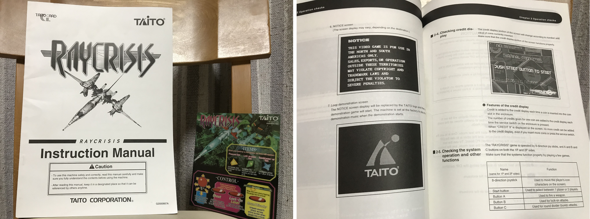
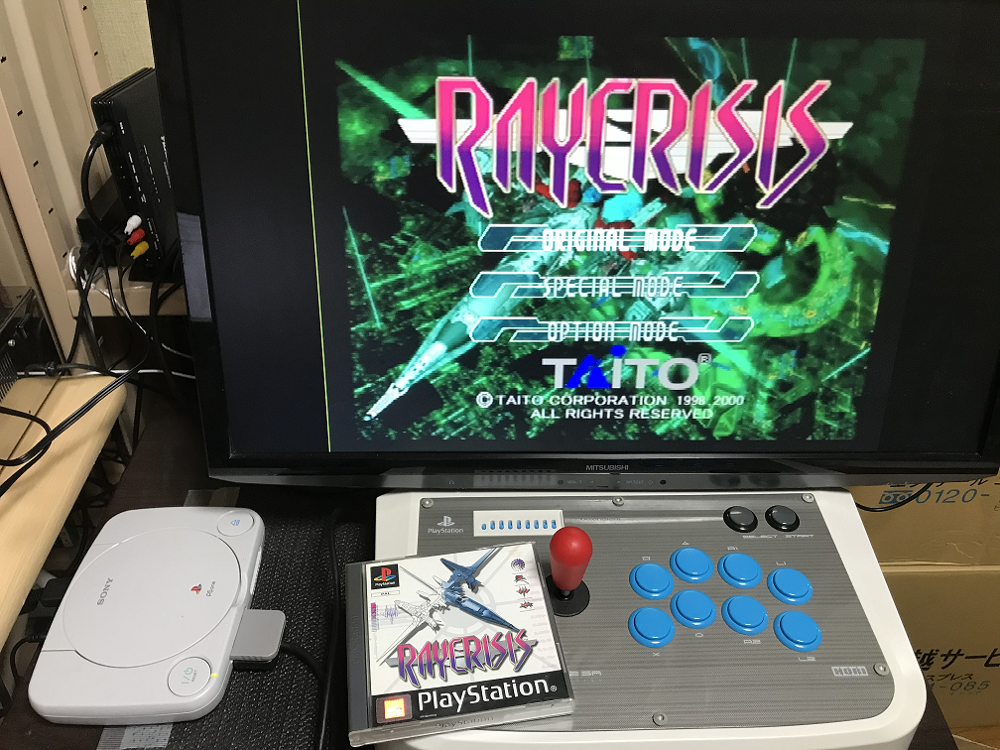
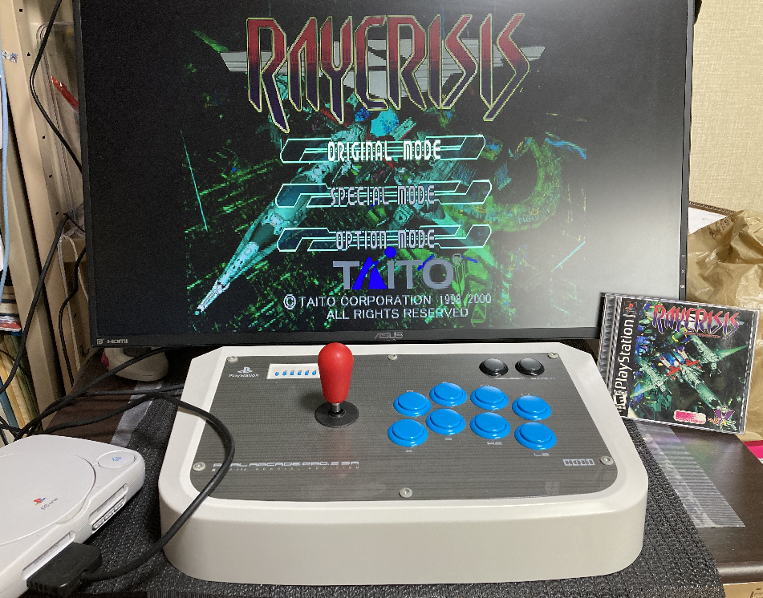
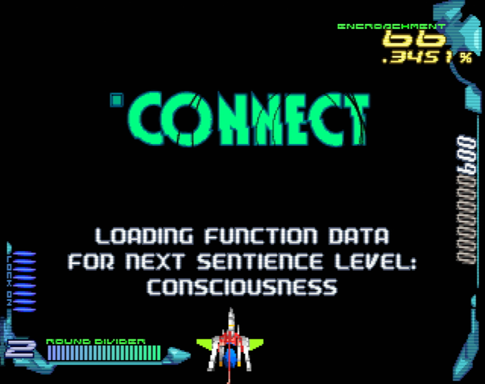
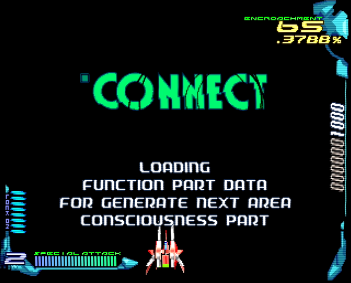
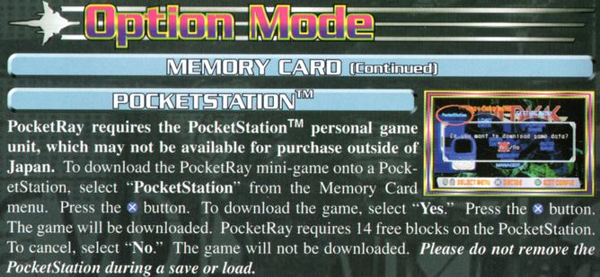
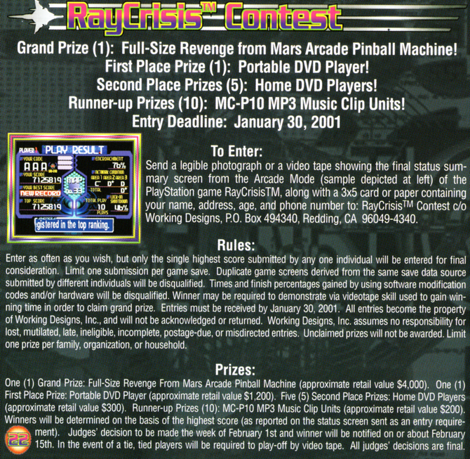
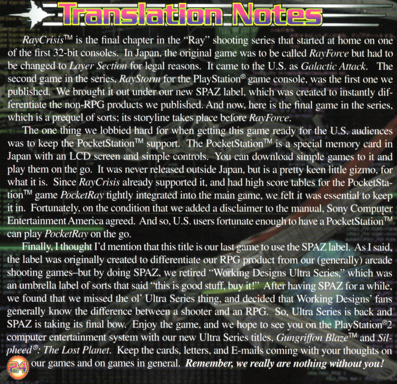
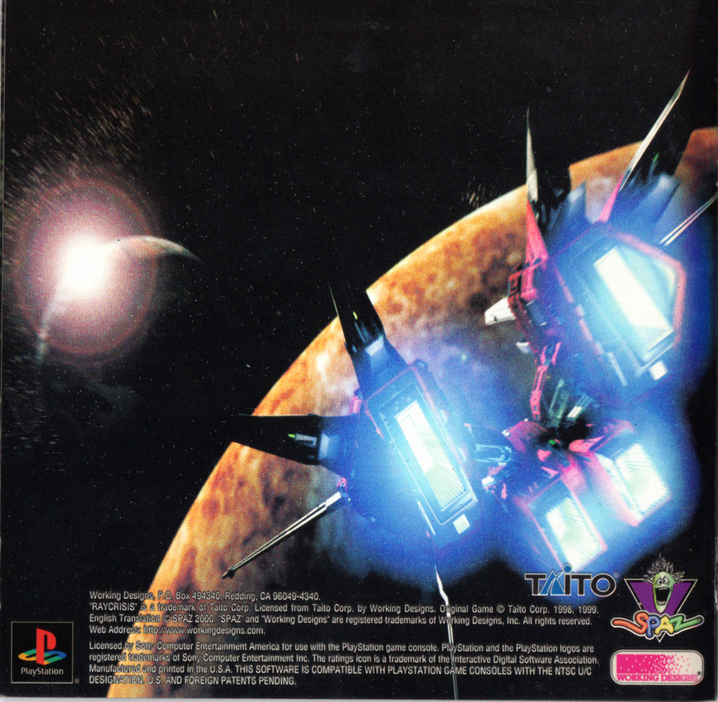

海外版について
前2作同様、本作も国外バージョンが存在しました。把握している範囲で説明します。
北米アーケード版
白状すると、ebayで偶然マニュアルを見つけるまで存在すら知りませんでした1。当然と言えば当然ですが、すべて英語表記です。注目なのは警告文で、日本版だと「JAPAN ONLY」だった部分が「NORTH AND SOUTH AMERICAS ONLY」に。その辺へ輸出されていたのでしょうね2。
その後、別の線から海外版の基板も入手できたのですが・・・以下の点から、謎が深まるシロモノでした。海外のデータベースに情報があり、PS版の没データを見ても、実在した基板ではあるようですが。
- 見た目や型番は、日本版とまったく同じ(「米国への輸出禁止」含む)
- 電源投入時のバージョン表記が「2.03O」(日本版は「2.03J」、北米版の説明書は「2.**A」)
- 警告表記が、日本版とも北米版ともまったく異なる
- 2P側だけ、デフォルトが2コイン/1クレジット
基板としては「別物」なのか、日本版を紐付けしたマザーボードに海外版のROMを挿すと、初回起動の処理が走りました。そして日本版に戻すと、ユーザーデータが消えていました。「同じタイトル」でも「異なるバージョン/リージョン」はNGで、互いに上書きしあうようです。
結論としては「何バージョンあるか分からん」です。海外版と北米版が存在するのか、北米版が海外版になったのか、あるいはその逆なのか・・・情報をお持ちの方は、ご一報下さい。
ちなみに、没データを見るにはディスクをエクスプローラーで開き、以下のファイルにアクセスします。TIM形式なので、Tim Collectionなどで変換して下さい。なぜか、解像度は640×240になっています。
- 日本AC版：TIM\TRASH\T_NTC_J.BIN
- 北米AC版(いずれもTIM\TRASH内)
- T_NTC_A.BIN
- T_FBI.BIN
- T_EPA.BIN
- 海外AC版：TIM\T_NTC_O.BIN
欧州PlayStation版

詳しい方ならご存じの通り、ヨーロッパの映像方式はPAL3が主流です(日本や北米はNTSC、ロシアやフランスはSECAM)。基本的に50fpsで動くため、60fpsの日本版よりゆっくりです。
本作のPAL版も、ご多分に漏れずそうです。ゲームスピードが0.8倍速なのです4。しかも曲は等倍速なので、すぐ展開がズレます。もともとPS版はかなりギリギリの収録なため、不自然なループやフェードアウトが多発。
結論として、わざわざ買う必要は無いです。比べたい! という奇特な人はさておき。もし遊ぶ場合、SCPH-102(PAL版PSOne)をオススメします5。日本版と比較した主な相違点は、以下の通り。
- 「POCKET RAY」は削除(ポケットステーション自体が日本限定なので)
- セーブは非互換(双方とも、認識はしますが読めません)
- Sem-slutが「Sem-slim」に("slut"はスラングで"尻軽女"だから?)
- OP/EDの音声バランスを調整(英語ボイスの方が強くなっています)
- 説明書にストーリーが無い(操作説明+αは英/仏/独/伊/西語で記載)6
- 販売元はJVC(日本ビクター) Music Europe(説明書にはVirginの表記もあり)
- なお、RGB/SCARTの映像出力は本体のリージョンを問いません。PACKAPUNCH SCARTケーブルなどを使えば基板レベルの画質を得られ、日本の本体と共用できるのでオススメ。
北米PlayStation版

- 遅ればせながら、こちらも入手できました。SCPH-101(NTSC U/C版PSOne)がオススメな点も、SCARTケーブルが使える点も同様です。日本版と比較した主な相違点は、以下の通り。
- 「POCKET RAY」は残存(詳細は後述)
- セーブは日本/北米/欧州それぞれで非互換
- Sem-slutが「Sem-strut」に(意図は不明)
- 販売元はSPAZ(Working Designsの別ブランド)
ざっとプレイしてみた結果として、言語以外に大きな違いは無いようです。領域移動時のメッセージを除けば。
こちらの方が、よりネイティブなニュアンスなのでしょうか。ちなみに、日本/欧州版はこうです。しかし、一転して熱意を感じさせるのがマニュアル。1ページ丸々使ってストーリーがつづられています。
ざっと訳すと、こんな具合。RAYFORCEの範囲までカバーしているようです。「惑星」が「地球」になっているのは、分かりやすさ優先なのでしょう。- Leslie Mcguireが自分のクローンをCon-humanにつなぎ、the Genetic Sanctity Law of 2119(遺伝的聖域法2119条)に違反7
- 人類の感情や存在の謎を完全には理解できなかったCon-human、狂気にかられ虐殺を開始
- the Deep Space Allied Armies(外惑星連合宇宙軍)の支援により、人類は地球からの脱出を開始
- Operation Meteor失敗、艦隊の70%を失う。これは始まりに過ぎない・・・
驚くべき事に「POCKET RAY」の記述が残っています。しかも「日本でしか出てない周辺機器が要る」という説明まで添えて。
さらに、ハイスコア大会のお知らせまで。大賞が「Revenge From Mars(ピンボールゲーム)のAC筐体」と、えらく豪華。最終リザルト画面のキャプチャーを送ってエントリーし、状況によりプレイを録画したビデオテープも要求する、とのこと。
ここまでの熱意を解説するのが、最終ページの「翻訳あとがき」。RAYFORCEがSS版で「Layer Section」、海外版で「Galactic Attack」となった8事に言及したり、前述の「POCKET RAY」を残すためSCEAと直談判したと書いていたり。よほど、思い入れがあったようです。
この「SPAZ」ブランド、同社の本筋のRPGと区別すべく創設されたのだそうです。その認識が十分存在するので、本作をもって閉めるとのこと。ジャケットがキラキラだったり、一部の縁取りが金だったり妙に豪華なのも、はなむけなのかもしれません。でも、裏表紙がRAYSTORMなのは謎だけど・・・。
1. ちなみにこのマニュアル、日本版にあったサポートの連絡先が消えてます。現地で何とかしろって事でしょうか ↩
2. じっさい、日本版は「米国への輸出禁止」の記載があります。北米版を意識したのでしょう ↩
3. PALとひとくちに言っても色々あるのですが、ここでは「日本と違うよ」ぐらいのノリです ↩
4. 改造コード(D00BAA7C 0001、300BAA7C 0000)を使うと日本版と同等の速度に戻せるので、プログラム側で落としているようです ↩
5. 電源が外出しなので、ACアダプターさえ日本仕様に変えれば動くためです ↩
6. いちおう裏面に、5カ国語で「君が最後の希望だ。迫り来るAlienを倒せ!」みたいな記載はあります。それは別作品のノリでは・・・ ↩
7. この「法律違反」を他の媒体で見た事が無いので、北米版の独自解釈かもしれません ↩
8. 厳密に言うと「Gunlock」もあるのですが、これは欧州AC版のようです ↩